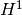

src.insertion_step¶
Module Contents¶
Functions¶
|
Insertion step & optimization step executed on a target measure. |
|
Uses multistart descent to search for the global minimizing curve. |
|
Checks if a given curve is close to the set of found stationary curves. |
|
Applies the gradient descent to an input curve. |
-
src.insertion_step.insertion_step(current_measure)¶ Insertion step & optimization step executed on a target measure.
- Parameters
- current_measure
src.classes.measure Target measure to apply the inserion + optimization step
- current_measure
- Returns
- new_measure
src.classes.measure - exit_flagint
0 if no new inserted curve was found. 1 else.
- new_measure
-
src.insertion_step.multistart_descent(current_measure)¶ Uses multistart descent to search for the global minimizing curve.
The multistart method corresponds to descent multiple randomly generated curves and to record the resulting stationary point of this descent expecting to find with this method the global minimizing curve. Some details:
- Parameters
- current_measure
src.classes.measure the current iterate of the algorithm.
- current_measure
- Returns
- stationary_curveslist[
src.classes.curve] list of the found stationary points of the insertion step problem.
- energy_curvesnumpy.ndarray
respective energy of the found stationary_curves, sorted in ascending order.
- stationary_curveslist[
Notes
To decrease the number of descents, this method routinely checks
if the current descended curve is close to the already known ones. If so, it stops and discards the curve. - The descented curves are proposed by
src.insertion_mod.propose()It consists of: already known curves, crossover curves, random ones. - If a crossover curve gets too close to a stationary curve earlier than the first check, it is not counted as an attempt.
-
src.insertion_step.is_close_to_stationaries(new_curve, new_curve_energy, stationary_curves, energy_curves) → bool¶ Checks if a given curve is close to the set of found stationary curves.
The distance is measured with the  norm, and the threshold is set by
config.multistart_taboo_dist.- Parameters
- new_curve
src.classes.curve Curve to check if it is close to the stationary set
- new_curve_energyfloat
Energy of the curve to check
- stationary_curveslist[
src.classes.curve] List of found stationary curves
- energy_curvesnumpy.ndarray
Energies of the found stationary curves sorted in ascendent order.
- new_curve
Notes
The energy_curves are used to accelerate the comparisons. To avoid with the whole set of found stationary curves.
-
src.insertion_step.gradient_descent(curve, w_t, max_iter=None, init_step=None, limit_stepsize=None)¶ Applies the gradient descent to an input curve.
The function to minimize F(γ) is defined via the dual variable. The Applied gradient descent is the Armijo with backtracking, with stopping condition reached when the stepsize reaches a predefined value.
- Parameters
- curve
src.classes.curve Curve to be descended.
- w_t
src.classes.dual_variable Dual variable associated to the current iterate.
- max_iterint, optional
A bound on the number of iterations. Defaults to
config.multistart_descent_max_iter.- init_stepfloat, optional
Defines the initial step of the descent method. Defaults to
config.multistart_descent_init_step.- limit_stepsizefloat, optional
The stopping condition for the gradient descent. Defaults to
config.multistart_descent_limit_stepsize
- curve
- Returns
Notes
As described in the paper, the gradient descent assumes that the input curve has negative energy: F(γ) < 0.